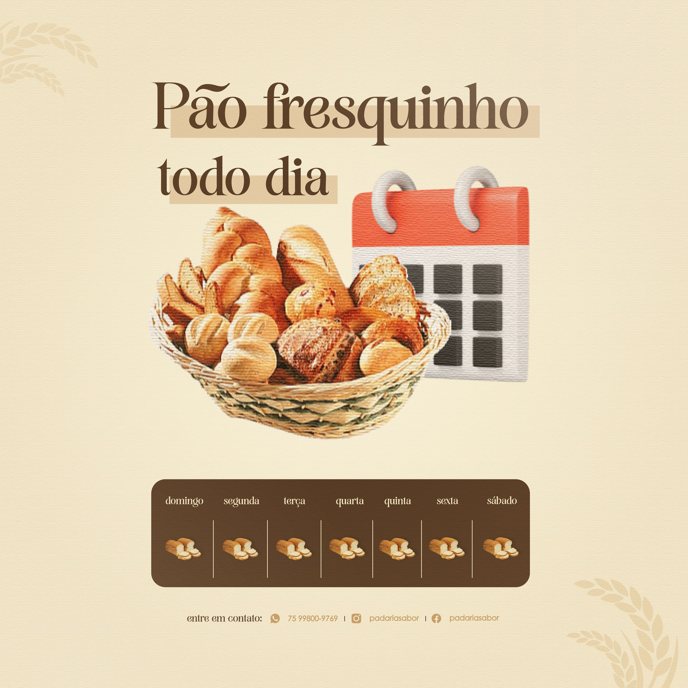

Designer Gráfico para Padaria – Artes Profissionais para Divulgação e Promoções
Se você tem uma padaria e quer atrair mais clientes todos os dias, investir em design profissional faz toda a diferença. Desenvolvo artes estratégicas para padarias que desejam divulgar promoções, combos de café da manhã, produtos frescos e novidades nas redes sociais.

A comunicação visual é responsável por transmitir qualidade, organização e profissionalismo. Uma arte bem elaborada valoriza seus pães, bolos, salgados e ofertas especiais, aumentando o engajamento no Instagram e incentivando o cliente a visitar sua padaria.
Artes Promocionais para Padaria
Crio artes personalizadas para divulgar pão francês quentinho, promoções de café da manhã, combos especiais, bolos sob encomenda, salgados, tortas e datas comemorativas. Cada peça é desenvolvida com foco em impacto visual e destaque estratégico para preços e horários.
O objetivo é chamar atenção no feed e despertar o desejo no cliente logo ao visualizar a publicação.
Flyer Digital e Material para Impressão
Produzo flyer digital para Instagram e WhatsApp, além de materiais prontos para impressão. Também desenvolvo banner promocional, cardápio simples, cartaz de ofertas e artes para fachada.
Um material visual organizado transmite mais confiança e fortalece a imagem da sua padaria no bairro.
Identidade Visual e Padronização
Manter uma identidade visual padronizada ajuda sua padaria a ser reconhecida com mais facilidade. Utilizo cores, tipografia e elementos visuais alinhados ao estilo do seu negócio, criando uma comunicação consistente.
Isso aumenta a percepção de qualidade e profissionalismo.
Vetorização de Logomarca
Se sua logomarca está em baixa qualidade, realizo vetorização profissional para garantir nitidez em embalagens, uniformes, placas, cardápios e redes sociais.
Uma logo vetorizada pode ser utilizada em qualquer tamanho sem perder qualidade.
Por que investir em design profissional para padaria?
O cliente escolhe onde comprar com base na percepção visual e na apresentação. Artes amadoras podem passar desorganização. Já um design profissional transmite confiança e qualidade.
Padarias que investem em divulgação estratégica conseguem aumentar o fluxo de clientes e fortalecer sua marca localmente.
Como funciona o processo de criação
1. Entendimento do público e objetivo
Analiso o perfil dos seus clientes e o objetivo da campanha, seja divulgar promoções diárias ou produtos específicos.
2. Planejamento visual estratégico
Organizo preços, descrições e chamadas promocionais de forma clara e atrativa.
3. Criação personalizada
Desenvolvo uma arte exclusiva valorizando seus produtos e diferenciais.
4. Ajustes e entrega final
Após aprovação, realizo ajustes necessários e entrego o material pronto para redes sociais ou impressão.
Perguntas Frequentes (FAQ)
Você cria artes exclusivas para padaria?
Sim. Todas as artes são personalizadas conforme a identidade visual e proposta da sua padaria.
Você faz apenas artes para Instagram?
Não. Também desenvolvo flyer digital, cartazes promocionais, banner, cardápios simples e materiais gráficos.
O que preciso enviar para iniciar o projeto?
Envie sua logomarca, informações da promoção, preços, horários e referências visuais.
Posso solicitar alterações?
Sim. Ajustes fazem parte do processo para garantir que o resultado final fique alinhado com sua expectativa.
Qual é o horário de atendimento?
Atendo de segunda a sábado, com suporte até às 22h. Esse horário estendido é um diferencial importante, pois sei que muitos proprietários de padaria organizam promoções, ajustam preços e planejam divulgações após o horário comercial. Por isso, ofereço atendimento até às 22h para facilitar o envio de informações, solicitações de ajustes e aprovação das artes. Meu objetivo é garantir praticidade, agilidade e um suporte acessível, permitindo que você resolva tudo no momento mais conveniente para o seu negócio.
O design realmente ajuda a aumentar as vendas?
Sim. Um design profissional aumenta a percepção de qualidade, chama atenção nas redes sociais e influencia diretamente na decisão do cliente.
Solicite sua Arte para Padaria
Se você deseja divulgar sua padaria com artes profissionais e estratégicas, entre em contato agora mesmo e solicite seu orçamento personalizado.